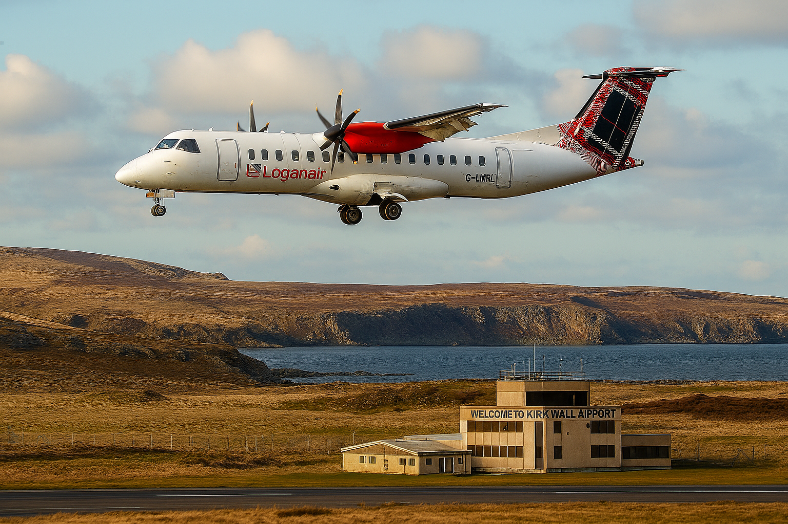

Getting Here
Ferry
There are 3 main Ferry routes to and from Orkney which are operated by NorthLink.
| Route | Journey Time |
|---|---|
| Aberdeen - Kirkwall | 6 Hours |
| Lerwick - Kirkwall | 6 Hours |
| Scrabster - Stromness | 90 mins |
Fly
Flights to Orkney increase in the summer, however routes from Aberdeen, Dundee, Edinburgh, Glasgow and Inverness operate all year round. All flights to and from Kirkwall are operated by Loganair.
Accomodation
We've got some reccomendations on where to stay, approved by frequent travellings and locals alike. Otherwise see what else the archipeligo has to offer, and find something that truly suits you.